Source file: DataSets/CVLAB/campus4-c1.avi
| Timestamp | Source | Analysis | Interpretation |
|---|---|---|---|
| 00:00:04 | |
Noise | |
| 00:00:05 | 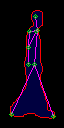 | Pedestrian | |
| 00:00:06 | 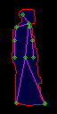 | Pedestrian | |
| 00:00:07 | 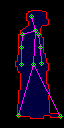 | Pedestrian | |
| 00:00:08 | |
Pedestrian | |
| 00:00:09 | Noise | ||
| 00:00:10 | Noise | ||
| 00:00:11 | 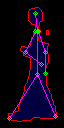 | Pedestrian | |
| 00:00:12 | 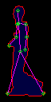 | Pedestrian | |
| 00:00:13 | Noise | ||
| 00:00:13 | Noise | ||
| 00:00:13 | Pedestrian | ||
| 00:00:14 | 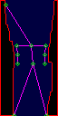 | Something | |
| 00:00:14 | 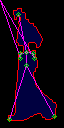 | Noise | |
| 00:00:14 | 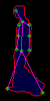 | Pedestrian | |
| 00:00:15 | Pedestrian | ||
| 00:00:15 | |
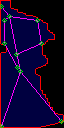 | Something |
| 00:00:15 | 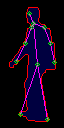 | Pedestrian | |
| 00:00:16 | |
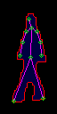 | Pedestrian |
| 00:00:16 | 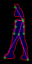 | Pedestrian | |
| 00:00:17 | Noise | ||
| 00:00:17 | 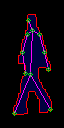 | Pedestrian | |
| 00:00:17 | |
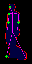 | Pedestrian |
| 00:00:18 | 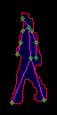 | Pedestrian | |
| 00:00:18 | Noise | ||
| 00:00:18 | 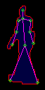 | Pedestrian | |
| 00:00:18 | 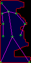 | Something | |
| 00:00:19 | Pedestrian | ||
| 00:00:19 | 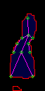 | Something | |
| 00:00:19 | 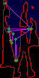 | Pedestrian | |
| 00:00:20 | 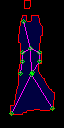 | Something | |
| 00:00:20 | Pedestrian | ||
| 00:00:20 | |
Pedestrian | |
| 00:00:21 | 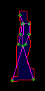 | Pedestrian | |
| 00:00:21 | |
Pedestrian | |
| 00:00:22 | Pedestrian | ||
| 00:00:22 | 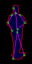 | Pedestrian | |
| 00:00:23 | 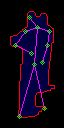 | Pedestrian | |
| 00:00:24 | Pedestrian | ||
| 00:00:25 | 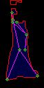 | Pedestrian | |
| 00:00:25 | Pedestrian |